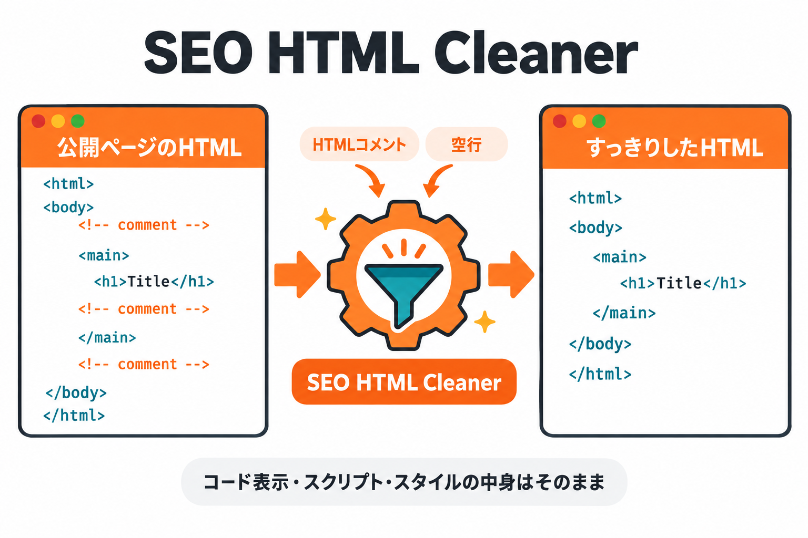
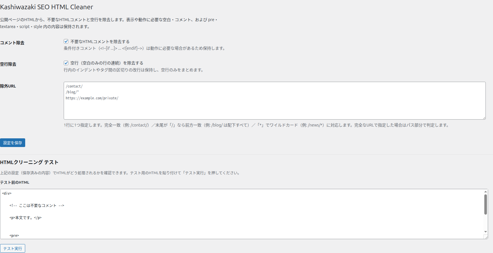

Kashiwazaki SEO HTML Cleaner マニュアル

公開ページのHTMLから、不要なHTMLコメントと空行を除去します。表示や動作に必要な空白・コメントと、コード表示やスクリプトの中身はそのまま残します。
WordPressでページを表示すると、テーマやプラグインが書き出したHTMLには、表示に使われないコメント（<!-- ... -->）や、空白だけの行がたくさん残ります。これらは画面には見えませんが、ソースコードを長く・読みにくくします。本プラグインは、公開ページを表示するときにこれらを取り除き、HTMLをすっきりさせます。取り除くかどうかは管理画面で切り替えられ、特定のページを除外することもできます。
主な機能
コメント除去
公開ページの不要なHTMLコメントを除去します。動作に必要な条件付きコメントは残します。
空行除去
空白だけの行が続く「空行」をまとめます。行内のインデントや区切りの改行は残します。
除外URL
クリーニングを適用しないページを指定できます。完全一致・前方一致・ワイルドカードに対応。
全体の流れ

できること
| 機能 | 内容 |
|---|---|
| 不要なコメントを消す | ソースに残った <!-- ... --> を除去します。動作に必要な条件付きコメント（<!--[if ...]> ... <![endif]-->）は残します。 |
| 空行をまとめる | 空白だけの行が連続する「空行」を1つにまとめます。 |
| 内容を守る | コード表示やスクリプト、スタイルの中身（pre・textarea・script・style）は一切変更しません。 |
| ページを除外する | 特定のURLではクリーニングを行いません。1行に1つ指定します。 |
対象は公開ページだけです。 管理画面・REST API・フィード・サイトマップ・robots.txt・Ajax はクリーニングの対象外です。管理画面の表示が変わることはありません。
設定画面の全体像

目次
| ページ | 内容 |
|---|---|
| 概要 | プラグインの機能概要と全体像 |
| インストール・初期設定 | インストール手順と、設定画面の開き方 |
| 設定画面の使い方 | コメント除去・空行除去・除外URL・設定の保存 |
| HTMLクリーニング テスト | 設定どおりに処理されるかを確認するテスト機能 |
| トラブルシューティング | よくある問題と解決方法 |
動作要件
| 項目 | 要件 |
|---|---|
| WordPress | 6.0以上 |
| PHP | 7.4以上 |